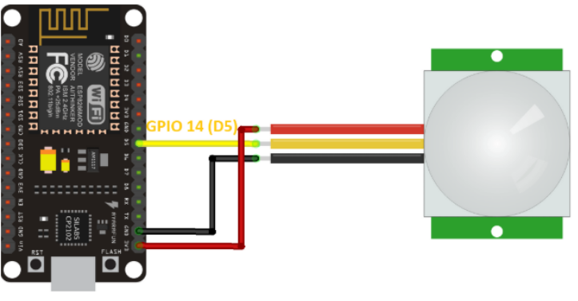
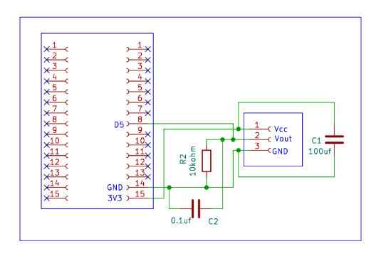
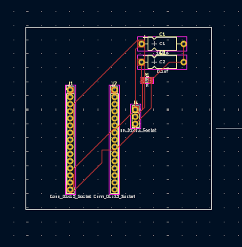
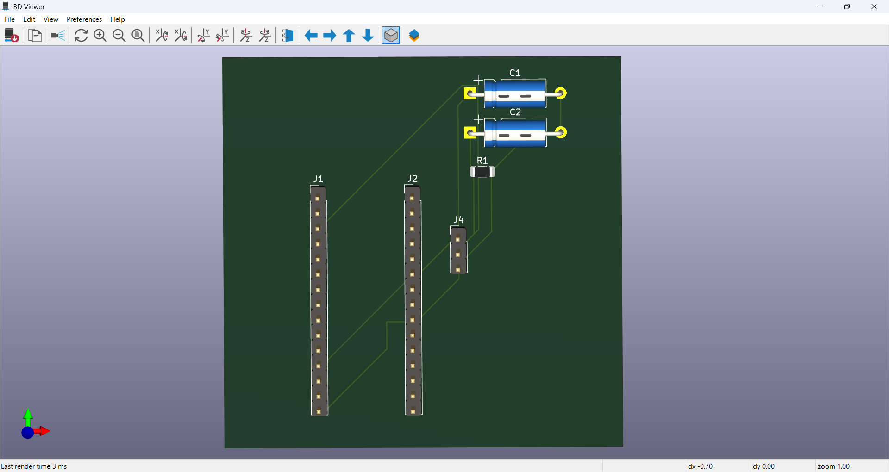

Introduction
This project involves designing a basic motion detection circuit using a PIR (Passive Infrared) sensor.
The goal was to create a compact and reliable PCB layout that interfaces a PIR sensor with an ESP8266 and other passive components.
The complete board was designed in KiCad, starting from the schematic and progressing through PCB layout and 3D visualization.

PIR Motion Sensor Circuit
Design Overview
Circuit Description
The PIR sensor detects motion and sends a HIGH signal to the ESP8266. The ESP8266 can then be programmed to trigger an LED or send the detected motion data to a cloud service such as Google Sheets.
The board uses an AMS1117 voltage regulator to convert the 5V input supply to 3.3V required by the ESP8266.
Circuit Design
PCB Design Steps
Schematic Design
Designed the complete circuit in KiCad with appropriate component connections and pin mapping.
Footprint Selection
Added suitable footprints for the ESP8266, PIR sensor, regulator and other components.
PCB Routing
Created a two-layer PCB layout with organized component placement and clean signal paths.
3D Verification
Verified the final board using KiCad's 3D Viewer before preparing the design for manufacturing.
Design Previews
The following views show the progression of the PCB design from schematic representation to the final board layout and 3D visualization.

PCB Schematic

PCB Layout

PCB 3D View
Learning Outcomes
Circuit Design
Gained practical experience in converting a circuit concept into a complete schematic.
PCB Layout
Learned component placement, routing and organization of a two-layer PCB.
3D Visualization
Used KiCad's 3D Viewer to inspect the physical appearance of the designed board.
Manufacturing Preparation
Understood the basics of preparing PCB designs and Gerber files for manufacturing.
Conclusion
This project provided practical experience in converting a simple motion-sensing circuit into a professional PCB layout using KiCad.
It also helped develop an understanding of component placement, signal routing, analog-digital separation, PCB visualization and preparing Gerber files for manufacturing.
PCB Design Work
View the complete PCB design files and work.